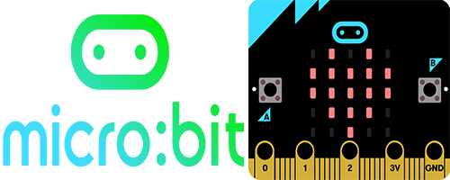

What is Micro:Bit?
Micro:Bit is a little coding development board that can be used with many different styles of coding, including blocks, and MicroPython (text-based). It also has many hardware features, like buttons, LED's, and much more.
The Micro:Bit can be coded in many different langauages, including the block-based MakeCode, text-based MicroPython, and even Arduino!
For more information, check out the Micro:Bit Website.
